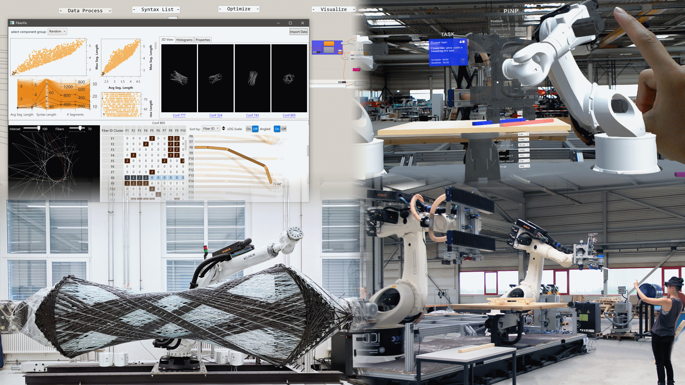

Visualization for Architecture, Engineering, and Construction: Shaping the Future of Our Built World


Venue. CG&A (2022)
Abstract. Our built world is one of the most important factors for a livable future, accounting for massive impact on resource and energy use, as well as climate change, but also the social and economic aspects that come with population growth. The architecture, engineering, and construction industry is facing the challenge that it needs to substantially increase its productivity, let alone the quality of buildings of the future. In this article, we discuss these challenges in more detail, focusing on how digitization can facilitate this transformation of the industry, and link them to opportunities for visualization and augmented reality research. We illustrate solution strategies for advanced building systems based on wood and fiber.